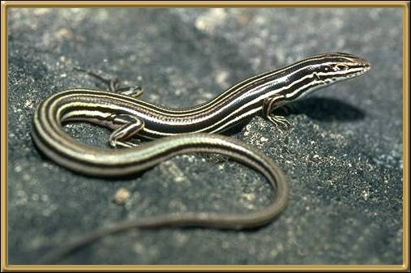

This particular skink is found through New South Wales, Queensland and Victoria. Although we see a lot of skinks in our garden, they very rarely are still long enough to identify them. As well, they are, unfortunately, a favourite 'toy' for cats.
Photographer: G. Torr